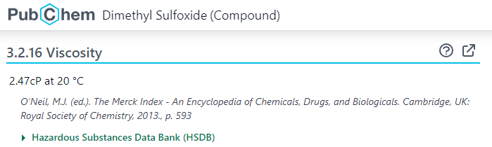
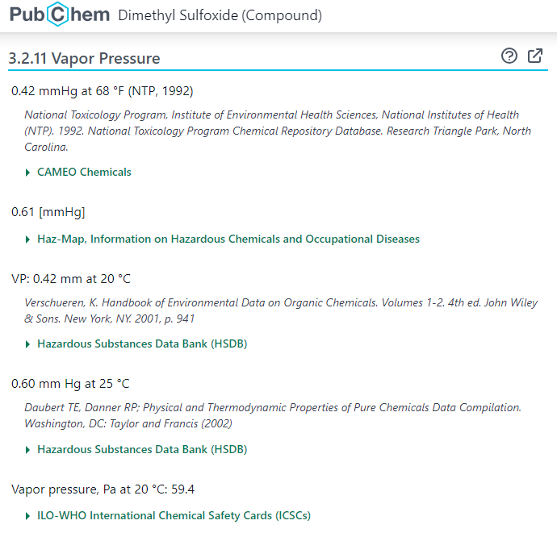
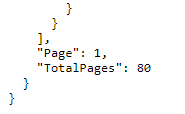

Accessing PubChem through PUG-View#
About this interactive  recipe
recipe
Author(s): Sunghwan Kim
Reviewer: Samuel Munday
Topic(s): How to retrieve chemical data using the PubChem View API.
Format: Interactive Jupyter Notebook (Python)
Scenario: You need to access and chemical data programatically based from PubChem annotations.
Skills: You should be familar with:
Learning outcomes:
How to get PubChem annotations for a compound
How to get PubChem annotations of multi-word sections and chemical properties for a compound
How to get PubChem annotations for data other types of records
Citation: ‘Accessing PubChem through PUG-View’, Sunghwan Kim, The IUPAC FAIR Chemistry Cookbook, Contributed: 2024-02-14 https://w3id.org/ifcc/IFCC009.
Reuse: This notebook is made available under a CC-BY-4.0 license.
PubChem provides multiple programmatic access routes. One of them is PUG-View, which is a Representational State Transfer (REST)-style web service interface specialized for accessing annotation data contained in PubChem. More detailed information on PUG-View can be found in the following paper:
PUG-View: programmatic access to chemical annotations integrated in PubChem
Kim et al., Journal of Cheminformatics, 2019, 11:56.
DOI: 10.1186/s13321-019-0375-2
Additional information can also be found at the PUG-View Help page (https://pubchem.ncbi.nlm.nih.gov/docs/pug-view.
This Jupyter notebook demonstrates how to programmatically access annotation data for PubChem records.
import requests
import time
import json
1. Annotations for a PubChem compound record.#
PubChem collects a wide range of information on chemicals and presents it on Compound Summary pages.
Let’s suppose that we want to find the viscosity of dimethyl sulfoxide (DMSO; CID 679). With a web browser like Google Chrome or MS Edge, you can find this information on the following web page:
https://pubchem.ncbi.nlm.nih.gov/compound/679#section=Viscosity

The viscosity of DMSO is 2.47 cP at 20 °C. It is expressed in cP (centipoise). 1 cP is equivalent to 0.01 P (Poise).
Now we want to get this viscosity information programmatically, using PUG-View.
# Formulate a PUG-View request URL.
base = "https://pubchem.ncbi.nlm.nih.gov/rest/pug_view"
cid = "679"
output = "JSON"
heading = "Viscosity"
url = base + "/data/compound/" + cid + "/" + output + "?heading=" + heading
print(url) # Check the request URL
https://pubchem.ncbi.nlm.nih.gov/rest/pug_view/data/compound/679/JSON?heading=Viscosity
Click the above PUG-View request URL to view the requested data in a web browser.
The request URL can also be used in a python script. The following cell sends a PUG-View request to the PubChem server and prints the returned data in a json format.
# Get the viscosity data and store it as "mydata"
mydata = requests.get(url).json()
print(json.dumps(mydata, indent=4))
{
"Record": {
"RecordType": "CID",
"RecordNumber": 679,
"RecordTitle": "Dimethyl Sulfoxide",
"Section": [
{
"TOCHeading": "Chemical and Physical Properties",
"Description": "Various chemical and physical properties that are experimentally determined for this compound. See also the Safety and Hazard Properties section (if available), which has additional properties pertinent to chemical safety and hazards.",
"Section": [
{
"TOCHeading": "Experimental Properties",
"Description": "Various experimentally determined properties for this compound. See also the Safety and Hazard Properties section (if available), which has additional properties pertinent to chemical safety and hazards.",
"Section": [
{
"TOCHeading": "Viscosity",
"Description": "Viscosity is a measure of a fluid's resistance to flow. It describes the internal friction of a moving fluid.",
"URL": "https://chem.libretexts.org/Bookshelves/Physical_and_Theoretical_Chemistry_Textbook_Maps/Supplemental_Modules_(Physical_and_Theoretical_Chemistry)/Physical_Properties_of_Matter/States_of_Matter/Properties_of_Liquids/Viscosity",
"Information": [
{
"ReferenceNumber": 41,
"Description": "PEER REVIEWED",
"Reference": [
"O'Neil, M.J. (ed.). The Merck Index - An Encyclopedia of Chemicals, Drugs, and Biologicals. Cambridge, UK: Royal Society of Chemistry, 2013., p. 593"
],
"ExtendedReference": [
{
"Citation": "O'Neil, M.J. (ed.). The Merck Index - An Encyclopedia of Chemicals, Drugs, and Biologicals. Cambridge, UK: Royal Society of Chemistry, 2013., p. 593",
"Matched": {
"PCLID": 906289205
}
}
],
"Value": {
"StringWithMarkup": [
{
"String": "2.47cP at 20 \u00b0C"
}
]
}
},
{
"ReferenceNumber": 55,
"Name": "",
"Value": {
"StringWithMarkup": [
{
"String": "1.95 mm\u00b2/s at 20 \u00b0C"
}
]
}
}
]
}
]
}
]
}
],
"Reference": [
{
"ReferenceNumber": 41,
"SourceName": "Hazardous Substances Data Bank (HSDB)",
"SourceID": "80",
"Name": "DIMETHYL SULFOXIDE",
"Description": "The Hazardous Substances Data Bank (HSDB) is a toxicology database that focuses on the toxicology of potentially hazardous chemicals. It provides information on human exposure, industrial hygiene, emergency handling procedures, environmental fate, regulatory requirements, nanomaterials, and related areas. The information in HSDB has been assessed by a Scientific Review Panel.",
"URL": "https://pubchem.ncbi.nlm.nih.gov/source/hsdb/80",
"LicenseURL": "https://www.nlm.nih.gov/web_policies.html",
"IsToxnet": true,
"ANID": 49
},
{
"ReferenceNumber": 55,
"SourceName": "ILO-WHO International Chemical Safety Cards (ICSCs)",
"SourceID": "0459",
"Name": "DIMETHYL SULPHOXIDE",
"Description": "The International Chemical Safety Cards (ICSCs) are data sheets intended to provide essential safety and health information on chemicals in a clear and concise way. The primary aim of the Cards is to promote the safe use of chemicals in the workplace.",
"URL": "https://www.ilo.org/dyn/icsc/showcard.display?p_version=2&p_card_id=0459",
"LicenseNote": "Creative Commons CC BY 4.0",
"LicenseURL": "https://www.ilo.org/global/copyright/lang--en/index.htm",
"ANID": 2260361
}
]
}
}
JSON-formatted data downloaded through PUG-View is often very large and not very easy to read. Therefore, it is necessary to parse the JSON-formatted data to extract necessary pieces of information, as shown in the next few cells.
node = mydata['Record']['Section'][0]['Section'][0]['Section'][0]['Information'][0]
node
{'ReferenceNumber': 41,
'Description': 'PEER REVIEWED',
'Reference': ["O'Neil, M.J. (ed.). The Merck Index - An Encyclopedia of Chemicals, Drugs, and Biologicals. Cambridge, UK: Royal Society of Chemistry, 2013., p. 593"],
'ExtendedReference': [{'Citation': "O'Neil, M.J. (ed.). The Merck Index - An Encyclopedia of Chemicals, Drugs, and Biologicals. Cambridge, UK: Royal Society of Chemistry, 2013., p. 593",
'Matched': {'PCLID': 906289205}}],
'Value': {'StringWithMarkup': [{'String': '2.47cP at 20 °C'}]}}
value = node['Value']['StringWithMarkup'][0]['String']
reference = node['Reference'][0]
print(value)
2.47cP at 20 °C
print(reference)
O'Neil, M.J. (ed.). The Merck Index - An Encyclopedia of Chemicals, Drugs, and Biologicals. Cambridge, UK: Royal Society of Chemistry, 2013., p. 593
There are many other annotation data available for this compound (DMSO). Here are some examples of them.
base = "https://pubchem.ncbi.nlm.nih.gov/rest/pug_view"
cid = "679"
output = "JSON"
headings = ["Density", "Decomposition", "Solubility", "Odor"]
for heading in headings:
url = base + "/data/compound/" + cid + "/" + output + "?heading=" + heading
print(url) # Check the request URL
https://pubchem.ncbi.nlm.nih.gov/rest/pug_view/data/compound/679/JSON?heading=Density
https://pubchem.ncbi.nlm.nih.gov/rest/pug_view/data/compound/679/JSON?heading=Decomposition
https://pubchem.ncbi.nlm.nih.gov/rest/pug_view/data/compound/679/JSON?heading=Solubility
https://pubchem.ncbi.nlm.nih.gov/rest/pug_view/data/compound/679/JSON?heading=Odor
The above PUG-View requests return the data presented on the corresponding sections of the compound summary page of DMSO (CID 679)
https://pubchem.ncbi.nlm.nih.gov/compound/679#section=Density
https://pubchem.ncbi.nlm.nih.gov/compound/679#section=Decomposition
https://pubchem.ncbi.nlm.nih.gov/compound/679#section=Solubility
https://pubchem.ncbi.nlm.nih.gov/compound/679#section=Odor
It is noteworthy that the heading parameter (after the “?” character) in a PUG-View request URL is optional. When the heading parameter is not given, all annotations available for the compound will be returned. For example, the following request URL returns all annotation data for DMSO (CID 679).
url = base + "/data/compound/" + cid + "/" + output # No heading parameter is set. All annotations for the CID will be returned.
print(url) # Check the request URL
https://pubchem.ncbi.nlm.nih.gov/rest/pug_view/data/compound/679/JSON
2. Data under a multi-word section heading#
Some section headings consist of multiple words (e.g., “Vapor Pressure”). For example, the following screenshot shows the vapor pressure of CID 679 (DMSO), which can be accessed at:
https://pubchem.ncbi.nlm.nih.gov/compound/679#section=Vapor-Pressure

To download the data presented under a multi-word section heading, the space between the words in the heading should be replaced with the “+” character, as shown in the following example:
# Formulate a PUG-View request URL.
base = "https://pubchem.ncbi.nlm.nih.gov/rest/pug_view"
cid = "679"
output = "JSON"
heading = "Vapor+Pressure"
url = base + "/data/compound/" + cid + "/" + output + "?heading=" + heading
print(url) # Check the request URL
https://pubchem.ncbi.nlm.nih.gov/rest/pug_view/data/compound/679/JSON?heading=Vapor+Pressure
# Get the viscosity data and store it as "mydata"
mydata = requests.get(url).json()
#print(json.dumps(mydata, indent=4)) # uncomment this line to print the data.
Data downloaded through PUG-View can be saved.
with open("../files/cid679-vapor-pressure.json", "w") as outfile:
json.dump(mydata, outfile, indent=4)
Many heading names consist of multiple words. Here are some examples [for DMSO (CID 679)].
base = "https://pubchem.ncbi.nlm.nih.gov/rest/pug_view"
cid = "679"
output = "JSON"
headings = ["Autoignition+Temperature",
"Refractive+Index",
"Exposure+Routes",
"Non-Human+Toxicity+Values",
"Ecotoxicity+Excerpts"]
for heading in headings:
url = base + "/data/compound/" + cid + "/" + output + "?heading=" + heading
print(url) # Check the request URL
https://pubchem.ncbi.nlm.nih.gov/rest/pug_view/data/compound/679/JSON?heading=Autoignition+Temperature
https://pubchem.ncbi.nlm.nih.gov/rest/pug_view/data/compound/679/JSON?heading=Refractive+Index
https://pubchem.ncbi.nlm.nih.gov/rest/pug_view/data/compound/679/JSON?heading=Exposure+Routes
https://pubchem.ncbi.nlm.nih.gov/rest/pug_view/data/compound/679/JSON?heading=Non-Human+Toxicity+Values
https://pubchem.ncbi.nlm.nih.gov/rest/pug_view/data/compound/679/JSON?heading=Ecotoxicity+Excerpts
The returned annotations are also presented in the compound summary page of DMSO (CID 679).
https://pubchem.ncbi.nlm.nih.gov/compound/679#section=Autoignition-Temperature
https://pubchem.ncbi.nlm.nih.gov/compound/679#section=Refractive-Index
https://pubchem.ncbi.nlm.nih.gov/compound/679#section=Exposure-Routes
https://pubchem.ncbi.nlm.nih.gov/compound/679#section=Non-Human-Toxicity-Values
https://pubchem.ncbi.nlm.nih.gov/compound/679#section=Ecotoxicity-Excerpts
3. Getting All Annotation Data for a Given Property#
In some cases, you may want to download all annotation data for a given property (for example, all human-toxicity values or all boiling-point values available in PubChem). This can be readily done through PUG-View, using the following request URLs.
3.1 Annotations for single-word headings#
heading = "Viscosity"
# The heading is included in the URL query string.
url = base + "/annotations/heading/JSON?heading=" + heading
print(url)
https://pubchem.ncbi.nlm.nih.gov/rest/pug_view/annotations/heading/JSON?heading=Viscosity
# The heading is included in the URL path.
url = base + "/annotations/heading/" + heading + "/JSON"
print(url)
https://pubchem.ncbi.nlm.nih.gov/rest/pug_view/annotations/heading/Viscosity/JSON
The above two request URLs differ in where the heading name appears. That is, the heading name can be encoded in:
the URL query string (after the “?” character), as in the first URL.
the URL path, as in the second URL.
The two URLs do exactly the same thing when the heading name consists of a single word.
3.2 Annotations for multiple-word headings#
When the heading name consists of multiple words, it is highly recommended to provide the heading name in the query string, although it is possible to provide it in the URL path. Let’s consider the task of downloading all Kovats retention index values.
heading1 = "Kovats%20Retention%20Index" # spaces are replaced with "%20"
heading2 = "Kovats+Retention+Index" # spaces are replaced with "+"
url1 = base + "/annotations/heading/JSON?heading=" + heading1
url2 = base + "/annotations/heading/JSON?heading=" + heading2
print(url1)
print(url2)
https://pubchem.ncbi.nlm.nih.gov/rest/pug_view/annotations/heading/JSON?heading=Kovats%20Retention%20Index
https://pubchem.ncbi.nlm.nih.gov/rest/pug_view/annotations/heading/JSON?heading=Kovats+Retention+Index
# The heading is included in the URL path.
url1 = base + "/annotations/heading/" + heading1 + "/JSON"
url2 = base + "/annotations/heading/" + heading2 + "/JSON"
print(url1)
print(url2) #-- This does not work!
https://pubchem.ncbi.nlm.nih.gov/rest/pug_view/annotations/heading/Kovats%20Retention%20Index/JSON
https://pubchem.ncbi.nlm.nih.gov/rest/pug_view/annotations/heading/Kovats+Retention+Index/JSON
When a multi-word heading name is provided in the URL query string (after the “&” character), the words can be separated by “%20” or “+” characters. However, only “%20” (not “+”) can be used when the heading name is provided in the URL path. Because this subtle difference is somewhat confusing, it is highly recommended that the heading name be always provided in the query string, which makes the request URL easier to read.
3.3 Multi-page annotations#
A PUG-View request has a maximum time limit of 30 seconds. If a PUG-View request exceeds this limit, a time-out error is returned. However, some headings have a large number of annotation data, making it impossible to get them within 30 seconds through a single PUG-REST request. To circumvent this issue, the annotation data are paginated.
The data returned from a PUG-View request contains the pagination information, which can be found at the end of the returned json data. It looks similar to this:

The pagination information includes the total number of pages for the requested data and the page number returned from the current request. Therefore, the above image indicates that the requested annotation data are 80-pages-long, and only the first page has been returned from the current request. To get all the data, you should loop through all pages, as shown in the following example.
heading = "Kovats+Retention+Index" # spaces are replaced with "+"
num_page_total = 80
data = [None] * num_page_total
for i in range(num_page_total):
page_curr = i + 1
url = base + "/annotations/heading/JSON?heading=" + heading + "&page=" + str(page_curr)
data[i] = requests.get(url).json()
if page_curr % 5 == 0 :
print("Getting data for page", page_curr)
time.sleep(0.2)
Getting data for page 5
Getting data for page 10
---------------------------------------------------------------------------
KeyboardInterrupt Traceback (most recent call last)
Cell In[20], line 10
8 page_curr = i + 1
9 url = base + "/annotations/heading/JSON?heading=" + heading + "&page=" + str(page_curr)
---> 10 data[i] = requests.get(url).json()
12 if page_curr % 5 == 0 :
13 print("Getting data for page", page_curr)
File /opt/hostedtoolcache/Python/3.11.12/x64/lib/python3.11/site-packages/requests/api.py:73, in get(url, params, **kwargs)
62 def get(url, params=None, **kwargs):
63 r"""Sends a GET request.
64
65 :param url: URL for the new :class:`Request` object.
(...)
70 :rtype: requests.Response
71 """
---> 73 return request("get", url, params=params, **kwargs)
File /opt/hostedtoolcache/Python/3.11.12/x64/lib/python3.11/site-packages/requests/api.py:59, in request(method, url, **kwargs)
55 # By using the 'with' statement we are sure the session is closed, thus we
56 # avoid leaving sockets open which can trigger a ResourceWarning in some
57 # cases, and look like a memory leak in others.
58 with sessions.Session() as session:
---> 59 return session.request(method=method, url=url, **kwargs)
File /opt/hostedtoolcache/Python/3.11.12/x64/lib/python3.11/site-packages/requests/sessions.py:589, in Session.request(self, method, url, params, data, headers, cookies, files, auth, timeout, allow_redirects, proxies, hooks, stream, verify, cert, json)
584 send_kwargs = {
585 "timeout": timeout,
586 "allow_redirects": allow_redirects,
587 }
588 send_kwargs.update(settings)
--> 589 resp = self.send(prep, **send_kwargs)
591 return resp
File /opt/hostedtoolcache/Python/3.11.12/x64/lib/python3.11/site-packages/requests/sessions.py:703, in Session.send(self, request, **kwargs)
700 start = preferred_clock()
702 # Send the request
--> 703 r = adapter.send(request, **kwargs)
705 # Total elapsed time of the request (approximately)
706 elapsed = preferred_clock() - start
File /opt/hostedtoolcache/Python/3.11.12/x64/lib/python3.11/site-packages/requests/adapters.py:667, in HTTPAdapter.send(self, request, stream, timeout, verify, cert, proxies)
664 timeout = TimeoutSauce(connect=timeout, read=timeout)
666 try:
--> 667 resp = conn.urlopen(
668 method=request.method,
669 url=url,
670 body=request.body,
671 headers=request.headers,
672 redirect=False,
673 assert_same_host=False,
674 preload_content=False,
675 decode_content=False,
676 retries=self.max_retries,
677 timeout=timeout,
678 chunked=chunked,
679 )
681 except (ProtocolError, OSError) as err:
682 raise ConnectionError(err, request=request)
File /opt/hostedtoolcache/Python/3.11.12/x64/lib/python3.11/site-packages/urllib3/connectionpool.py:787, in HTTPConnectionPool.urlopen(self, method, url, body, headers, retries, redirect, assert_same_host, timeout, pool_timeout, release_conn, chunked, body_pos, preload_content, decode_content, **response_kw)
784 response_conn = conn if not release_conn else None
786 # Make the request on the HTTPConnection object
--> 787 response = self._make_request(
788 conn,
789 method,
790 url,
791 timeout=timeout_obj,
792 body=body,
793 headers=headers,
794 chunked=chunked,
795 retries=retries,
796 response_conn=response_conn,
797 preload_content=preload_content,
798 decode_content=decode_content,
799 **response_kw,
800 )
802 # Everything went great!
803 clean_exit = True
File /opt/hostedtoolcache/Python/3.11.12/x64/lib/python3.11/site-packages/urllib3/connectionpool.py:534, in HTTPConnectionPool._make_request(self, conn, method, url, body, headers, retries, timeout, chunked, response_conn, preload_content, decode_content, enforce_content_length)
532 # Receive the response from the server
533 try:
--> 534 response = conn.getresponse()
535 except (BaseSSLError, OSError) as e:
536 self._raise_timeout(err=e, url=url, timeout_value=read_timeout)
File /opt/hostedtoolcache/Python/3.11.12/x64/lib/python3.11/site-packages/urllib3/connection.py:516, in HTTPConnection.getresponse(self)
513 _shutdown = getattr(self.sock, "shutdown", None)
515 # Get the response from http.client.HTTPConnection
--> 516 httplib_response = super().getresponse()
518 try:
519 assert_header_parsing(httplib_response.msg)
File /opt/hostedtoolcache/Python/3.11.12/x64/lib/python3.11/http/client.py:1395, in HTTPConnection.getresponse(self)
1393 try:
1394 try:
-> 1395 response.begin()
1396 except ConnectionError:
1397 self.close()
File /opt/hostedtoolcache/Python/3.11.12/x64/lib/python3.11/http/client.py:325, in HTTPResponse.begin(self)
323 # read until we get a non-100 response
324 while True:
--> 325 version, status, reason = self._read_status()
326 if status != CONTINUE:
327 break
File /opt/hostedtoolcache/Python/3.11.12/x64/lib/python3.11/http/client.py:286, in HTTPResponse._read_status(self)
285 def _read_status(self):
--> 286 line = str(self.fp.readline(_MAXLINE + 1), "iso-8859-1")
287 if len(line) > _MAXLINE:
288 raise LineTooLong("status line")
File /opt/hostedtoolcache/Python/3.11.12/x64/lib/python3.11/socket.py:718, in SocketIO.readinto(self, b)
716 while True:
717 try:
--> 718 return self._sock.recv_into(b)
719 except timeout:
720 self._timeout_occurred = True
File /opt/hostedtoolcache/Python/3.11.12/x64/lib/python3.11/ssl.py:1314, in SSLSocket.recv_into(self, buffer, nbytes, flags)
1310 if flags != 0:
1311 raise ValueError(
1312 "non-zero flags not allowed in calls to recv_into() on %s" %
1313 self.__class__)
-> 1314 return self.read(nbytes, buffer)
1315 else:
1316 return super().recv_into(buffer, nbytes, flags)
File /opt/hostedtoolcache/Python/3.11.12/x64/lib/python3.11/ssl.py:1166, in SSLSocket.read(self, len, buffer)
1164 try:
1165 if buffer is not None:
-> 1166 return self._sslobj.read(len, buffer)
1167 else:
1168 return self._sslobj.read(len)
KeyboardInterrupt:
In this example, the downloaded data are stored as a list of json objects, while the data for each page can be stored in a separate variable or file. Also note that time.sleep(0.2) is added to avoid overloading PubChem servers. According to PubChem’s usage policy, the user should not submit more than 5 requests per second and violators will be blocked for a certain period of time (typically less than 24 hours).
3.4 Annotations from a specific data collection#
PubChem has multiple data collections, including Substance, Compound, BioAssay, Gene, Protein, Pathway, Cell Line, Taxonomy, Element, and Patent. Some annotation headings appear in more than one data collection. For example, both a compound and an element can have the “boiling point” information, as shown in these examples:
Compound (benzene as an example)
https://pubchem.ncbi.nlm.nih.gov/compound/241#section=Boiling-PointElement (argon as an example)
https://pubchem.ncbi.nlm.nih.gov/element/18#section=Boiling-Point
Therefore, when downloading annotations for a heading used in multiple data collections, it is necessary to specify what data collections you want to download data from. This can be done using the “heading_type” parameter.
# Getting annotations for compounds
heading = "Boiling+Point" # spaces are replaced with "+"
url = base + "/annotations/heading/JSON?heading=" + heading + "&heading_type=compound"
print(url)
# Getting annotations for elements
heading = "Boiling+Point" # spaces are replaced with "+"
url = base + "/annotations/heading/JSON?heading=" + heading + "&heading_type=element"
print(url)
Note that, in the above two URL examples, the heading_type parameter is set to “compound” and “element” to download boiling points for compounds and elements, respectively.
4. Annotations for PubChem records other than compounds.#
With PUG-View, you can programmatically access annotations for compounds as well as other PubChem records, such as genes, proteins, pathways, cell lines, taxons, and patents.
The examples below demonstrate how to access the data presented on the following summary pages:
https://pubchem.ncbi.nlm.nih.gov/gene/1956#section=Protein-Isoforms
https://pubchem.ncbi.nlm.nih.gov/protein/P10828#section=Related-Proteins
https://pubchem.ncbi.nlm.nih.gov/cell/30#section=Diseases
https://pubchem.ncbi.nlm.nih.gov/taxonomy/9986#section=Names-and-Identifiers
https://pubchem.ncbi.nlm.nih.gov/patent/US-8148324-B2#section=Important-Dates
# Formulate a PUG-View request URL.
base = "https://pubchem.ncbi.nlm.nih.gov/rest/pug_view"
# Annotations for a gene record
record_type = "gene"
record_id = "1956" #-- NCBI Gene ID for human EGFR
heading = "Protein+Isoforms"
url = base + "/data/" + record_type + "/" + record_id + "/JSON?heading=" + heading
print(url)
# Annotations for a protein record
record_type = "protein"
record_id = "P10828" #-- NCBI Protein Accession for human thyroid hormone receptor beta
heading = "Related+Proteins"
url = base + "/data/" + record_type + "/" + record_id + "/JSON?heading=" + heading
print(url)
# Annotations for a cell line record
record_type = "cell"
record_id = "hela" #-- Cell Line Abbreviation
heading = "Diseases"
url = base + "/data/" + record_type + "/" + record_id + "/JSON?heading=" + heading
print(url)
# Annotations for a taxonomy (organism) record
record_type = "taxonomy"
record_id = "9986" #-- NCBI Taxonomy ID for Oryctolagus cuniculus (rabbit)
heading = "Names+and+Identifiers"
url = base + "/data/" + record_type + "/" + record_id + "/JSON?heading=" + heading
print(url)
# Annotations for a taxonomy (organism) record
record_type = "patent"
record_id = "US-8148324-B2" #-- Patent ID
heading = "Important+Dates"
url = base + "/data/" + record_type + "/" + record_id + "/JSON?heading=" + heading
print(url)
As mentioned previously, the heading parameter is optional. If it is not provided in the above request URLs, all annotation data for the records will be returned.
In addition, PUG-View can also be used to retrieve data for PubChem substance and assay records.
# Annotations for a PubChem substance record
record_type = "substance"
record_id = "319892613" #-- PubChem Substance ID (SID)
url = base + "/data/" + record_type + "/" + record_id + "/JSON"
print(url)
# Annotations for a PubChem bioassay record
record_type = "bioassay"
record_id = "720659" #-- PubChem BioAssay ID (AID)
url = base + "/data/" + record_type + "/" + record_id + "/JSON"
print(url)
Note that PubChem Substance and BioAssay collections are archival in nature. It means that the data for the records in these two collections are submitted by data depositors (not collected by PubChem).